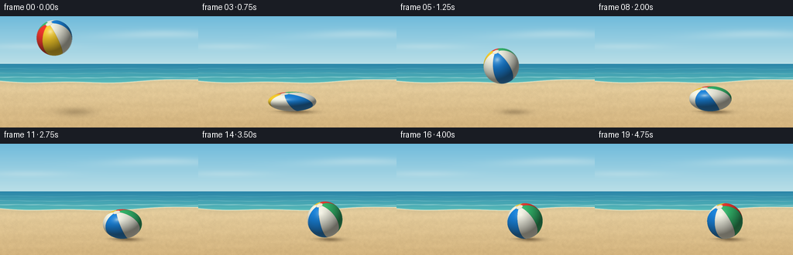
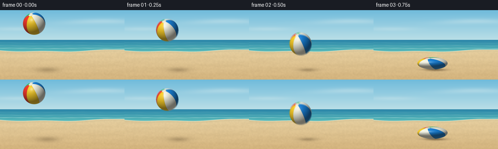

CODING AGENTS AS PIXEL WORLD MODELS
traex/GPT-6.1-Sol · phygen_030
点击播放 · 原生 RGB 像素
逐轮保存的候选
回放视频、检查图与代码变化。
每份候选均可单独播放。实际图片检查记录在下方工具轨迹中。
候选 01播放与检查图
点击播放 · 原生 RGB 像素


展开代码变化
--- 上一保存版本
+++ 本次保存版本
@@ -0,0 +1,204 @@
+"""A text-built beach-ball shot: analytic bounce dynamics and procedural RGB rendering."""
+from pathlib import Path
+import json
+import numpy as np
+from PIL import Image, ImageFilter
+import artifact_io
+
+ROOT = Path(__file__).resolve().parent
+SPEC = json.loads((ROOT / 'task_spec.json').read_text())
+W, H = SPEC['width'], SPEC['height']
+SS = 3
+SW, SH = W*SS, H*SS
+rng = np.random.default_rng(30)
+Y, X = np.mgrid[0:SH, 0:SW].astype(np.float32)
+X = (X+.5)/SS
+Y = (Y+.5)/SS
+R, FLOOR, G = 23., 123., 240.
+# Real elapsed time includes a short compression/restitution interval at each impact.
+contacts = [(.68, .82, .75, .54), (1.94, 2.06, 2., .70),
+ (2.69, 2.82, 2.75, .83), (3.18, 3.32, 3.25, .92),
+ (3.58, 3.69, 3.63, .96)]
+flights = [(.82, 1.94), (2.06, 2.69), (2.82, 3.18), (3.32, 3.58)]
+V0 = ((FLOOR-R-28.) - .5*G*.68**2)/.68
+
+
+def noise_grid(w, h, amp):
+ a = rng.uniform(0, 255, (h, w)).astype(np.uint8)
+ a = np.asarray(Image.fromarray(a).resize((SW, SH), Image.Resampling.BICUBIC), dtype=np.float32)
+ return (a/255-.5)*amp
+
+
+def make_background():
+ sky = np.zeros((SH, SW, 3), dtype=np.float32)
+ f = np.clip(Y/83, 0, 1)[...,None]
+ sky[:] = np.array([112, 187, 219])*(1-f) + np.array([211, 235, 235])*f
+ # A broad, quiet offshore cloud bank. No distracting background objects.
+ cloud = (np.exp(-((Y-25-2*np.sin(X/46))/5.5)**2)*np.exp(-((X-210)/77)**2)
+ +.7*np.exp(-((Y-39)/4)**2)*np.exp(-((X-37)/52)**2))*.29
+ sky = sky*(1-cloud[...,None]) + np.array([247,249,242])*cloud[...,None]
+ sea_top = 61.8
+ coast = 83 + 3*np.sin(X/75+.3) + .9*np.sin(X/19)
+ sea = (Y >= sea_top) & (Y < coast)
+ q = np.clip((Y-sea_top)/24, 0, 1)
+ sea_color = np.array([43,133,169])[None,None,:]*(1-q[...,None]) + np.array([88,186,185])[None,None,:]*q[...,None]
+ ripple = np.sin(Y*3.1+.8*np.sin(X/17))*.95 + np.sin(Y*1.6+X*.043)*1.8
+ sea_color += ripple[...,None]*np.array([.5,1,1.1])
+ sky[sea] = sea_color[sea]
+ for baseline, strength, width in [(68,.2,.28),(74,.27,.40),(79.3,.45,.6)]:
+ path = baseline + .50*np.sin(X/26+baseline) + .14*np.sin(X/4.7)
+ foam = np.exp(-((Y-path)/width)**2)*strength*(.64+.36*np.sin(X/11+baseline)**2)*sea
+ sky = sky*(1-foam[...,None])+np.array([223,245,237])*foam[...,None]
+ sand = np.zeros_like(sky)
+ f = np.clip((Y-80)/64, 0, 1)[...,None]
+ sand[:] = np.array([230,207,160])*(1-f)+np.array([211,179,125])*f
+ tex = noise_grid(90,55,6)+noise_grid(320,180,4)+rng.normal(0,.65,(SH,SW))
+ sand += tex[...,None]*np.array([1,.92,.71])
+ # Gentle, barely visible wind-shaped sand undulations.
+ sand += (1.4*np.sin(Y*.34 + X*.018)+.8*np.sin(Y*.68-X*.022))[...,None]
+ ground = Y>=coast
+ sky[ground]=sand[ground]
+ wet = np.exp(-((Y-coast-1.7)/2.7)**2)*.18*ground
+ sky = sky*(1-wet[...,None])+np.array([164,159,122])*wet[...,None]
+ foam = np.exp(-((Y-coast)/.62)**2)*.61
+ sky = sky*(1-foam[...,None])+np.array([249,248,221])*foam[...,None]
+ # Small embedded sand flecks, scaled down into subtle natural texture.
+ for _ in range(1050):
+ xx = rng.uniform(0,W); yy=rng.uniform(92,H)
+ ix, iy = int(xx*SS),int(yy*SS)
+ size = rng.choice([1,1,1,2])
+ if iy<SH and ix<SW:
+ sky[iy:iy+size,ix:ix+size] += rng.choice([-10,-6,6])*np.array([1,.91,.7])
+ return np.clip(sky,0,255)
+
+BG = make_background()
+PALETTE = np.array([[245,55,45], [252,208,42], [247,247,231],
+ [25,132,222], [246,246,231], [53,190,112]],dtype=np.float32)
+
+
+def state(t):
+ if t < .68:
+ cy=28+V0*t+.5*G*t*t
+ speed=V0+G*t
+ # Slight axial extension in the fast downward throw.
+ sy=1+.045*(speed/(V0+G*.68))**2
+ h=FLOOR-(cy+R*sy)
+ else:
+ h=0.; sy=1.
+ for a,b,peak,compression in contacts:
+ if a<=t<=b:
+ u=(t-a)/(peak-a) if t<peak else (b-t)/(b-peak)
+ sy=1-(1-compression)*np.sin(np.pi*.5*np.clip(u,0,1))**1.25
+ break
+ for a,b in flights:
+ if a<t<b:
+ dt=t-a
+ h=.5*G*dt*(b-a-dt)
+ # Elastic recovery to a very slight upward stretch after release.
+ sy=1+.045*np.exp(-dt/.13)
+ break
+ cy=FLOOR-h-R*sy
+ rx=R/np.sqrt(sy)
+ ry=R*sy
+ cx=70+72*t if t<.68 else 118.96+53*(1-np.exp(-(t-.68)/1.55))
+ return cx,cy,rx,ry,max(h,0),sy
+
+# Each splash has deterministic, small ballistic sand grains; no explosions.
+particles=[]
+for i,(a,b,peak,c) in enumerate(contacts[:3]):
+ rr=np.random.default_rng(310+i)
+ particles.append((peak,rr.uniform(-38,38,28),rr.uniform(13,39,28)*(1-.19*i),rr.uniform(.15,.5,28),rr.uniform(.65,1,28)))
+
+
+def render(t):
+ image=BG.copy()
+ cx,cy,rx,ry,height,sy=state(t)
+ # A sunlight cast shadow grows softer and lighter with distance above sand.
+ sx=cx+7+.28*height
+ shx=rx*.91+.15*height
+ shy=3.5+.052*height
+ shadow=np.exp(-1.9*((X-sx)/shx)**2-1.9*((Y-(FLOOR+1.1))/shy)**2)
+ shadow*=.19+.17*np.exp(-height/20)
+ image*=1-shadow[...,None]*np.array([.94,1,1.08])
+ contact=np.exp(-2.4*((X-cx)/(rx*.85))**2-2.8*((Y-FLOOR)/1.35)**2)*.28*np.exp(-height/2.3)
+ image*=1-contact[...,None]
+ # Small momentary spray traveling outward just above the landing surface.
+ for born,vxs,vys,sizes,strengths in particles:
+ dt=t-born
+ if 0<dt<.52:
+ hitx=state(born)[0]
+ for vx,vy,size,strength in zip(vxs,vys,sizes,strengths):
+ px=hitx+np.sign(vx)*R*.67+vx*dt
+ py=FLOOR-vy*dt+65*dt*dt
+ if py<FLOOR+.5:
+ alpha=np.exp(-((X-px)/size)**2-((Y-py)/(size*.7))**2)*strength*(1-dt/.6)
+ image=image*(1-alpha[...,None])+np.array([181,147,96])*alpha[...,None]
+ # Analytical ellipsoid surface. Panel markings turn with the physical ball.
+ xmin=max(0,int((cx-rx-1)*SS)); xmax=min(SW,int((cx+rx+1)*SS)+1)
+ ymin=max(0,int((cy-ry-1)*SS)); ymax=min(SH,int((cy+ry+1)*SS)+1)
+ xx=X[ymin:ymax,xmin:xmax]; yy=Y[ymin:ymax,xmin:xmax]
+ nx=(xx-cx)/rx; ny=(cy-yy)/ry
+ disk=nx*nx+ny*ny
+ mask=disk<=1
+ nz=np.sqrt(np.clip(1-disk,0,1))
+ normals=np.stack([nx,ny,nz],axis=-1)
+ # Surface normal of an ellipsoid for the illumination, distinct from UV coordinates.
+ lights=normals/np.array([rx,ry,R],dtype=np.float32)
+ lights/=np.maximum(np.linalg.norm(lights,axis=-1,keepdims=True),1e-5)
+ L=np.array([-.44,.69,.70]); L/=np.linalg.norm(L)
+ diffuse=np.maximum(lights@L,0)
+ # Pole tilted toward the viewer/upper left, with rotation around that pole.
+ pole=np.array([-.31,.80,.51]);pole/=np.linalg.norm(pole)
+ u=np.cross(np.array([0.,0.,1.]),pole);u/=np.linalg.norm(u)
+ v=np.cross(pole,u)
+ angle=.34+2.1*min(t,.68)+1.7*(1-np.exp(-max(0,t-.68)/2.3))
+ angle += .16*max(0,t-3.69)
+ longitude=np.arctan2(normals@v,normals@u)+angle
+ segment=(longitude%(2*np.pi))/(2*np.pi/6)
+ ids=np.floor(segment).astype(np.int32)%6
+ color=PALETTE[ids].copy()
+ polar=normals@pole
+ # Small cream circular inflation cap at the point where the welded panels meet.
+ cap=polar>.980
+ color[cap]=np.array([241,239,219])
+ seam_dist=np.minimum(segment%1,1-segment%1)
+ seam=np.exp(-(seam_dist/.012)**2)*(.16+.10*(1-nz))
+ seam*=np.clip((.987-polar)/.015,0,1)
+ color*=1-seam[...,None]
+ capring=np.exp(-((polar-.982)/.0028)**2)*.16
+ color*=1-capring[...,None]
+ # Soft ambient fill, strong sunlight, and reflected warm sand on the underside.
+ illumination=.40+.60*diffuse
+ color*=illumination[...,None]
+ lower=np.clip(-lights[...,1],0,1)*(1-diffuse)*.12
+ color+=lower[...,None]*np.array([119,91,47])
+ facing=np.clip(nz,0,1)
+ edge=(1-facing)**3
+ color+=edge[...,None]*np.array([16,20,19])
+ half=L+np.array([0,0,1.]);half/=np.linalg.norm(half)
+ spec=np.maximum(lights@half,0)
+ shine=.26*spec**24 +.27*spec**145
+ color=color*(1-shine[...,None])+np.array([255,253,241])*shine[...,None]
+ # Subtle plastic skin, not a perfect computer-generated matte sphere.
+ fine=np.sin(xx*12.3+yy*17.1)*np.sin(xx*19.7-yy*8.6)*.47
+ color+=fine[...,None]
+ region=image[ymin:ymax,xmin:xmax]
+ region[mask]=color[mask]
+ return np.clip(image,0,255)
+
+
+def main():
+ frames=[]
+ for i in range(SPEC['frames']):
+ t=i/SPEC['fps']
+ # Short photographic exposure: a hint of blur only while moving rapidly.
+ samples=[render(max(0,t+delta)) for delta in (-.009,0,.009)]
+ rgb=np.mean(samples,axis=0).astype(np.uint8)
+ frame=Image.fromarray(rgb,'RGB').resize((W,H),Image.Resampling.LANCZOS)
+ frames.append(np.asarray(frame,dtype=np.uint8))
+ frames=np.stack(frames)
+ artifact_io.save(frames,ROOT)
+ print(f'Saved {len(frames)} RGB frames at {W}x{H}, {SPEC["fps"]} fps.')
+
+if __name__=='__main__':
+ main()
可观测工具轨迹
实际执行的命令与返回图片。
命令 1exit 0
/bin/bash -lc 'ls -la && cat prompt.txt && cat GENERATION_RULES.md && cat task_spec.json'
命令 2exit 0
/bin/bash -lc "cat artifact_io.py && python - <<'PY'
import numpy, PIL
print('numpy and PIL available')
PY"命令 3exit 0
/bin/bash -lc "cat > generate.py <<'PY'
\"\"\"A text-built beach-ball shot: analytic bounce dynamics and procedural RGB rendering.\"\"\"
from pathlib import Path
import json
import numpy as np
from PIL import Image, ImageFilter
import artifact_io
ROOT = Path(__file__).resolve().parent
SPEC = json.loads((ROOT / 'task_spec.json').read_text())
W, H = SPEC['width'], SPEC['height']
SS = 3
SW, SH = W*SS, H*SS
rng = np.random.default_rng(30)
Y, X = np.mgrid[0:SH, 0:SW].astype(np.float32)
X = (X+.5)/SS
Y = (Y+.5)/SS
R, FLOOR, G = 23., 123., 240.
# Real elapsed time includes a short compression/restitution interval at each impact.
contacts = [(.68, .82, .75, .54), (1.94, 2.06, 2., .70),
(2.69, 2.82, 2.75, .83), (3.18, 3.32, 3.25, .92),
(3.58, 3.69, 3.63, .96)]
flights = [(.82, 1.94), (2.06, 2.69), (2.82, 3.18), (3.32, 3.58)]
V0 = ((FLOOR-R-28.) - .5*G*.68**2)/.68
def noise_grid(w, h, amp):
a = rng.uniform(0, 255, (h, w)).astype(np.uint8)
a = np.asarray(Image.fromarray(a).resize((SW, SH), Image.Resampling.BICUBIC), dtype=np.float32)
return (a/255-.5)*amp
def make_background():
sky = np.zeros((SH, SW, 3), dtype=np.float32)
f = np.clip(Y/83, 0, 1)[...,None]
sky[:] = np.array([112, 187, 219])*(1-f) + np.array([211, 235, 235])*f
# A broad, quiet offshore cloud bank. No distracting background objects.
cloud = (np.exp(-((Y-25-2*np.sin(X/46))/5.5)**2)*np.exp(-((X-210)/77)**2)
+.7*np.exp(-((Y-39)/4)**2)*np.exp(-((X-37)/52)**2))*.29
sky = sky*(1-cloud[...,None]) + np.array([247,249,242])*cloud[...,None]
sea_top = 61.8
coast = 83 + 3*np.sin(X/75+.3) + .9*np.sin(X/19)
sea = (Y >= sea_top) & (Y < coast)
q = np.clip((Y-sea_top)/24, 0, 1)
sea_color = np.array([43,133,169])[None,None,:]*(1-q[...,None]) + np.array([88,186,185])[None,None,:]*q[...,None]
ripple = np.sin(Y*3.1+.8*np.sin(X/17))*.95 + np.sin(Y*1.6+X*.043)*1.8
sea_color += ripple[...,None]*np.array([.5,1,1.1])
sky[sea] = sea_color[sea]
for baseline, strength, width in [(68,.2,.28),(74,.27,.40),(79.3,.45,.6)]:
path = baseline + .50*np.sin(X/26+baseline) + .14*np.sin(X/4.7)
foam = np.exp(-((Y-path)/width)**2)*strength*(.64+.36*np.sin(X/11+baseline)**2)*sea
sky = sky*(1-foam[...,None])+np.array([223,245,237])*foam[...,None]
sand = np.zeros_like(sky)
f = np.clip((Y-80)/64, 0, 1)[...,None]
sand[:] = np.array([230,207,160])*(1-f)+np.array([211,179,125])*f
tex = noise_grid(90,55,6)+noise_grid(320,180,4)+rng.normal(0,.65,(SH,SW))
sand += tex[...,None]*np.array([1,.92,.71])
# Gentle, barely visible wind-shaped sand undulations.
sand += (1.4*np.sin(Y*.34 + X*.018)+.8*np.sin(Y*.68-X*.022))[...,None]
ground = Y>=coast
sky[ground]=sand[ground]
wet = np.exp(-((Y-coast-1.7)/2.7)**2)*.18*ground
sky = sky*(1-wet[...,None])+np.array([164,159,122])*wet[...,None]
foam = np.exp(-((Y-coast)/.62)**2)*.61
sky = sky*(1-foam[...,None])+np.array([249,248,221])*foam[...,None]
# Small embedded sand flecks, scaled down into subtle natural texture.
for _ in range(1050):
xx = rng.uniform(0,W); yy=rng.uniform(92,H)
ix, iy = int(xx*SS),int(yy*SS)
size = rng.choice([1,1,1,2])
if iy<SH and ix<SW:
sky[iy:iy+size,ix:ix+size] += rng.choice([-10,-6,6])*np.array([1,.91,.7])
return np.clip(sky,0,255)
BG = make_background()
PALETTE = np.array([[245,55,45], [252,208,42], [247,247,231],
[25,132,222], [246,246,231], [53,190,112]],dtype=np.float32)
def state(t):
if t < .68:
cy=28+V0*t+.5*G*t*t
speed=V0+G*t
# Slight axial extension in the fast downward throw.
sy=1+.045*(speed/(V0+G*.68))**2
h=FLOOR-(cy+R*sy)
else:
h=0.; sy=1.
for a,b,peak,compression in contacts:
if a<=t<=b:
u=(t-a)/(peak-a) if t<peak else (b-t)/(b-peak)
sy=1-(1-compression)*np.sin(np.pi*.5*np.clip(u,0,1))**1.25
break
for a,b in flights:
if a<t<b:
dt=t-a
h=.5*G*dt*(b-a-dt)
# Elastic recovery to a very slight upward stretch after release.
sy=1+.045*np.exp(-dt/.13)
break
cy=FLOOR-h-R*sy
rx=R/np.sqrt(sy)
ry=R*sy
cx=70+72*t if t<.68 else 118.96+53*(1-np.exp(-(t-.68)/1.55))
return cx,cy,rx,ry,max(h,0),sy
# Each splash has deterministic, small ballistic sand grains; no explosions.
particles=[]
for i,(a,b,peak,c) in enumerate(contacts[:3]):
rr=np.random.default_rng(310+i)
particles.append((peak,rr.uniform(-38,38,28),rr.uniform(13,39,28)*(1-.19*i),rr.uniform(.15,.5,28),rr.uniform(.65,1,28)))
def render(t):
image=BG.copy()
cx,cy,rx,ry,height,sy=state(t)
# A sunlight cast shadow grows softer and lighter with distance above sand.
sx=cx+7+.28*height
shx=rx*.91+.15*height
shy=3.5+.052*height
shadow=np.exp(-1.9*((X-sx)/shx)**2-1.9*((Y-(FLOOR+1.1))/shy)**2)
shadow*=.19+.17*np.exp(-height/20)
image*=1-shadow[...,None]*np.array([.94,1,1.08])
contact=np.exp(-2.4*((X-cx)/(rx*.85))**2-2.8*((Y-FLOOR)/1.35)**2)*.28*np.exp(-height/2.3)
image*=1-contact[...,None]
# Small momentary spray traveling outward just above the landing surface.
for born,vxs,vys,sizes,strengths in particles:
dt=t-born
if 0<dt<.52:
hitx=state(born)[0]
for vx,vy,size,strength in zip(vxs,vys,sizes,strengths):
px=hitx+np.sign(vx)*R*.67+vx*dt
py=FLOOR-vy*dt+65*dt*dt
if py<FLOOR+.5:
alpha=np.exp(-((X-px)/size)**2-((Y-py)/(size*.7))**2)*strength*(1-dt/.6)
image=image*(1-alpha[...,None])+np.array([181,147,96])*alpha[...,None]
# Analytical ellipsoid surface. Panel markings turn with the physical ball.
xmin=max(0,int((cx-rx-1)*SS)); xmax=min(SW,int((cx+rx+1)*SS)+1)
ymin=max(0,int((cy-ry-1)*SS)); ymax=min(SH,int((cy+ry+1)*SS)+1)
xx=X[ymin:ymax,xmin:xmax]; yy=Y[ymin:ymax,xmin:xmax]
nx=(xx-cx)/rx; ny=(cy-yy)/ry
disk=nx*nx+ny*ny
mask=disk<=1
nz=np.sqrt(np.clip(1-disk,0,1))
normals=np.stack([nx,ny,nz],axis=-1)
# Surface normal of an ellipsoid for the illumination, distinct from UV coordinates.
lights=normals/np.array([rx,ry,R],dtype=np.float32)
lights/=np.maximum(np.linalg.norm(lights,axis=-1,keepdims=True),1e-5)
L=np.array([-.44,.69,.70]); L/=np.linalg.norm(L)
diffuse=np.maximum(lights@L,0)
# Pole tilted toward the viewer/upper left, with rotation around that pole.
pole=np.array([-.31,.80,.51]);pole/=np.linalg.norm(pole)
u=np.cross(np.array([0.,0.,1.]),pole);u/=np.linalg.norm(u)
v=np.cross(pole,u)
angle=.34+2.1*min(t,.68)+1.7*(1-np.exp(-max(0,t-.68)/2.3))
angle += .16*max(0,t-3.69)
longitude=np.arctan2(normals@v,normals@u)+angle
segment=(longitude%(2*np.pi))/(2*np.pi/6)
ids=np.floor(segment).astype(np.int32)%6
color=PALETTE[ids].copy()
polar=normals@pole
# Small cream circular inflation cap at the point where the welded panels meet.
cap=polar>.980
color[cap]=np.array([241,239,219])
seam_dist=np.minimum(segment%1,1-segment%1)
seam=np.exp(-(seam_dist/.012)**2)*(.16+.10*(1-nz))
seam*=np.clip((.987-polar)/.015,0,1)
color*=1-seam[...,None]
capring=np.exp(-((polar-.982)/.0028)**2)*.16
color*=1-capring[...,None]
# Soft ambient fill, strong sunlight, and reflected warm sand on the underside.
illumination=.40+.60*diffuse
color*=illumination[...,None]
lower=np.clip(-lights[...,1],0,1)*(1-diffuse)*.12
color+=lower[...,None]*np.array([119,91,47])
facing=np.clip(nz,0,1)
edge=(1-facing)**3
color+=edge[...,None]*np.array([16,20,19])
half=L+np.array([0,0,1.]);half/=np.linalg.norm(half)
spec=np.maximum(lights@half,0)
shine=.26*spec**24 +.27*spec**145
color=color*(1-shine[...,None])+np.array([255,253,241])*shine[...,None]
# Subtle plastic skin, not a perfect computer-generated matte sphere.
fine=np.sin(xx*12.3+yy*17.1)*np.sin(xx*19.7-yy*8.6)*.47
color+=fine[...,None]
region=image[ymin:ymax,xmin:xmax]
region[mask]=color[mask]
return np.clip(image,0,255)
def main():
frames=[]
for i in range(SPEC['frames']):
t=i/SPEC['fps']
# Short photographic exposure: a hint of blur only while moving rapidly.
samples=[render(max(0,t+delta)) for delta in (-.009,0,.009)]
rgb=np.mean(samples,axis=0).astype(np.uint8)
frame=Image.fromarray(rgb,'RGB').resize((W,H),Image.Resampling.LANCZOS)
frames.append(np.asarray(frame,dtype=np.uint8))
frames=np.stack(frames)
artifact_io.save(frames,ROOT)
print(f'Saved {len(frames)} RGB frames at {W}x{H}, {SPEC[\"fps\"]} fps.')
if __name__=='__main__':
main()
PY
python generate.py
ls -lh pixels.npz index.html inspection.png transition_check.png"命令 4exit 0
/bin/bash -lc "python - <<'PY'
from pathlib import Path
import numpy as np
from PIL import Image
p=Path('.')
a=np.load(p/'pixels.npz')['pixels']
assert a.shape==(144,256,20)
assert len(list((p/'frames').glob('*.png')))==20
assert all(Image.open(p/'frames'/f'{i:02d}.png').mode=='RGB' for i in range(20))
print('Validated packed RGB dimensions, 20 RGB frame files, and player artifact.')
PY"保存候选 1 份；完成命令 4 次；可验证图片返回 0 张。原始 API 响应与完整日志保留在本地。